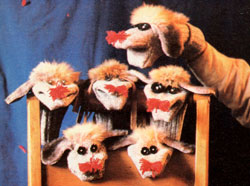
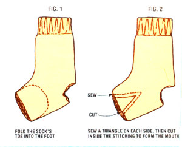

Here's a way to clean out a cluttered darning bag...and maybe even earn a little cash in the bargain.
One day not long ago, I sat and pondered a scrap bag full of old socks ... many of which sported gaping holes. Now I hate to throw anything away, but-I wondered-what else could I do with the old abused footwear?
As I mused upon the problem, I absent-mindedly slipped my fingers into a nice woolen sock (with a two-inch hole in its heel), and it suddenly occurred to me that I could probably transform this misfit into a charming hand puppet, one that would make a first-rate gift for a young relative!
I started scrounging up other materials from around my house to fashion the puppet's face. I found some old buttons that a simply begged to become eyes ... a ball of red yarn for a pom-pom nose . . . and even an old fox-fur collar to provide some hair. Finally, a quick search through my sewing bag's collection of odds and ends turned up a scrap of fake fur, which I decided would make a pair of floppy ears.
To construct your own sock puppet, choose a well-worn foot warmer and turn it inside out. Next, fold the toe area into the foot of the sock (see Fig. 1). Sew a triangle on each side of the sock, and make an inverted "V" cut inside the resulting lines of stitching (Fig. 2). This procedure will form the puppet's mouth. Now, turn the sock right side out and attach the ears, nose, eyes ... and any other features that strike your fancy!
Since the hole in my first "puppeted" sock was across the heel, I secured the hairpiece in such a way that it covered the imperfection neatly. If you have a sock with a hole some other place, you can surely invent a way to disguise it ... by adding whiskers, "rosy cheek" patches, or some other sort of whimsical decoration. I was so happy with my first puppet that I made three more to give away as Christmas presents. And when I showed the creations to a friend of mine, she suggested that I make a few more for sale at the local craft guild shop. As it turned out, I was able to sell every puppet I brought to the show, for $3.75 each, and-since I used only materials salvaged from other projects-my cost was zero! It gave me a lot of satisfaction to know that I could earn extra money with a craft I enjoyed ... while ridding my household of excess odds and ends!
|
 |
 |
|